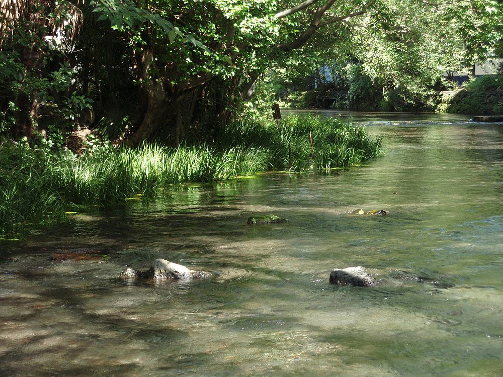
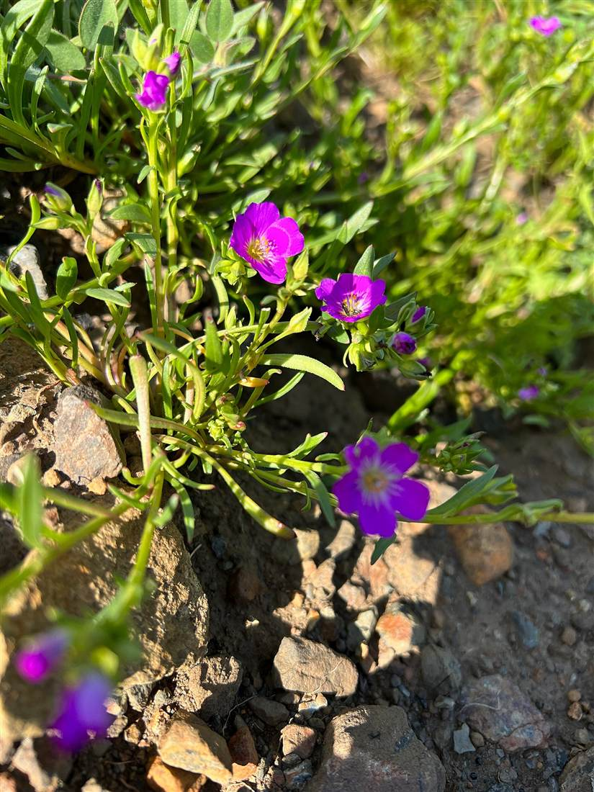

掲載写真はイメージ素材です(実際の店舗・商品とは異なります)。一部は三島以外の各地で撮影された写真です。
湧水のほとりの、ひと休み
歩き疲れたら、水の音のそばでひと息。
そんな時間を思い浮かべながら、
このページをつくりました。
三島市は、富士山の雪解け水が湧き出る「水の都」として知られています。街なかには、せせらぎの音を楽しめる水辺があります。花と緑のカフェGuriGuri(グリグリ)は、そんな静岡県三島市の安久にあるカフェです。お店の様子や詳しい内容は、準備が整い次第ご案内します。気になる点はお電話でお気軽にお問い合わせください。
店名から思い浮かべる風景
「花と緑」という言葉から連想した、水辺の草花や若葉のイメージです。

写真は店内の様子ではありません。
ご案内
| 営業時間 | 準備中(お問い合わせください) |
|---|---|
| 定休日 | 準備中(お問い合わせください) |
| 予約 | 準備中(お問い合わせください) |
営業時間やご予約は、お電話でご確認ください。
電話する 055-941-5959メニューを見る
口コミ(イメージ例)のページへ。※サイトの完成イメージのための創作文で、実際のお客様の声ではありません。
口コミのページを見る